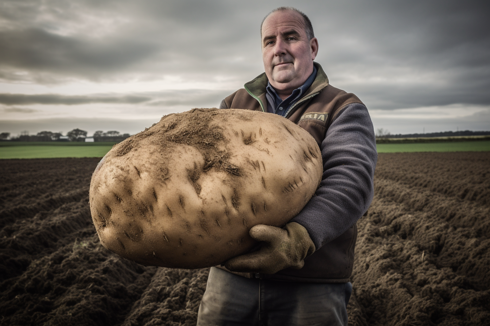

Spud-tacular Discovery: Irish Farmer Uncovers the World's Largest Potato, Tipping the Scales at a Whopping 25kg
Tater Triumph: A Hefty, Hilarious, and Record-Breaking Vegetable Takes the Spotlight in Ireland
By |
In a story that has captured the imagination of potato enthusiasts everywhere, an Irish farmer has unearthed the world's largest potato, weighing in at a jaw-dropping 25kg. The colossal tuber, which was discovered by farmer Seamus O'Reilly on his picturesque County Kerry farm, has sent shockwaves through the global potato community.
O'Reilly made the astonishing discovery while harvesting his potato crop. As he dug through the soil, he noticed a particularly large and misshapen potato that seemed to be growing larger with each passing moment. Upon closer inspection, he realized that he had stumbled upon a truly gargantuan spud, dwarfing all other potatoes in both size and heft.
News of the massive potato quickly spread through the local community and beyond, attracting the attention of potato enthusiasts, foodies, and curious onlookers from around the world. As word reached the International Potato Committee, officials were dispatched to O'Reilly's farm to verify the authenticity and weight of the record-breaking tuber.
Upon their arrival, the committee members were astounded to find that the potato was indeed a genuine contender for the title of the world's largest potato. After carefully weighing the titanic tuber on a set of industrial scales, the final weight was confirmed at an astonishing 25kg – smashing the previous record by several kilograms.
The newly crowned heavyweight champion of the potato world has been affectionately named "Spudzilla" by the local community, in honor of its monstrous size and impressive girth. O'Reilly has been inundated with offers from collectors and museums eager to display the colossal vegetable, but he has opted to keep Spudzilla on his farm for the time being, allowing visitors to marvel at its size and take photos with the famous potato.
As the story of Spudzilla continues to captivate the world, the people of County Kerryare celebrating their newfound potato fame with a series of potato-themed events, including potato sack races, a mashed potato sculpting contest, and, of course, a Spudzilla-inspired feast featuring delicious potato dishes.
The tale of the world's largest potato serves as a heartwarming and hilarious reminder that sometimes, even the humblest of vegetables can rise to greatness – and capture the hearts and imaginations of people around the globe. So raise a fork to Spudzilla, the king of potatoes, and the Irish farmer who brought this magnificent tuber to light.
Disclaimer: This is a fictional news article and is intended for entertainment purposes only.
None of the events or characters depicted here are real or based on any factual sources.